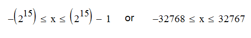
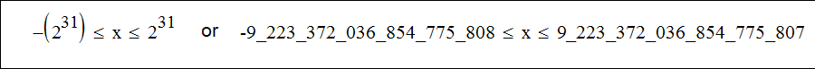
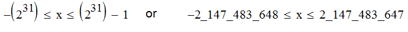
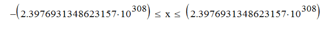

2.2 - Java Statements
Statements are comparable to sentences in the common languages. Java statements are instructions to the compiler using Java keywords. In Java all the statements should terminate with a semicolon. That is the reason of naming the semicolon as the statement terminator.
An empty statement comprises from a single semicolon. It does not make any useful action of course.
Normally, a statement comprises from single keyword followed by the expression needed for the application of this keyword, all terminating with a semicolon.
2.3 - Java Data Types
There is two categories of data types in Java. These are,
- Value Types (Primitive Data Types +Strings)
- Reference Types (Objects)
We will explain primitive data types and strings first. We will introduce objects a little later.
2.3.1 - Primitive Data Types
There is eight primitive data types in the category of primitive data types. These are byte, short, int long, float double, char, boolean. We will present these primitive types in this section. We will introduce object data type as soon as after the introduction of primitive types.
2.3.1.1 - byte
Values in the computer is represenred by bits. A bit is a single digit either 0 or 1. A byte is defined as a chunk of 8 bits. The variables of the primitive type byte, are 8-bit signed two's complement integers occupying exactly one byte of memory.
The range of signed integer values x that can be assigned to a variable of type byte is
The positive integers are one less of the negative integers because of zero is assumed as in a negative side.
The primitive signed integer data type byte has very limited range and is not frequently used in Java programs.
2.3.1.2 - short
The primitive type short is a two bytes wide (8 x 2 = 16 bit) signed integer type ranging from,

The primitive signed integer data type short is not frequently used in Java programs.
2.3.1.3 - int
The primitive type int, is a four byte (32 bit) wide signed integer type. This is the most frequently used integer data type in Java programs. The range of the int type data is quite large as it is seen below:

Expression of integer data with underscores is supported with the release of Java SE 7. But, we must not supply integer literals beginning and ending with underscores. If we define something like _67_6789 or 67_45_ the compiler will reject the assignment.
The range of the int data type is sufficiently large for the majority of the applications. That is the reason that the primitive data type int is almost exclusively used for representing integer values.
2.3.1.4 - long
The primitive data type long is an eight byte (64 bit) wide signed integer type. As it might be expected his range is huge. The range of this data type,

This is more than enough to give an id number to all the inhabitants of this planet.
This type is only used when the need arises. But the long integer literals must be suffixed with l or preferably with L like 45789L
2.3.1.5 - float
This data type is a single precision 32 bit IEE-754 floating point data type used for decimal point data. His range is about,
This is a low range - low precision floating point data type, only preferred for its low memory consumption
The smallest positive finite non-zero literal of type float is 1.40e-45f.
2.3.1.6 - double
This data type is almost exclusively used with decimal point data. It is 64 bit IEE-754 format data type with extended range and precision. His range and precision is shown below:

with 15 decimal digits precision.
The smallest positive finite non-zero literal of type double is 4.9e-324.
This data type has better range and precision characteristcs for decimal point data. It is suggested not using this neither this data type nor floats for data requiring high precision calculations, especially with the currency data. For these purposes we can use predefiened class java.math.BigDecimal. But, for most purposes, the range and precision of the double will be adequate.
All floating point types are imprecise by definition and carries a very small, otherwise neglactable error term at their 14 and 15th decimal. The internal respresentation of 6.0 may be 6.000000000000021 due to this little imprecision, it is not recommended to use equals to operator (==) with these data types. Use relative comparison operators such as < which we will talk under boolean (logical) operators.
Thoretical information about numeric ranges and their mathematical explanations are given in the Java Language Specification section 4.3.2. But for the common usage of Java data types, the information given in this chapter will be adequate.
2.3.1.7 - char
The char data type is 16 bit wide Unicode character. Its minimum value is 0 or 'u\0000' and maximum value of 65535 (inclusive) or 'u\ffff'. As of Java SE 7 new surrogate characters are added to this data type extending the with to 64 bit. Unicode characters defined beyond 32 bit range, is not backwards compatible.
Note that for all the characters represented with a data typechar there corresponds a numerical Unicode entry point value. These values are largely used by the programmers for character comparisons or pasing purposes.
2.3.1.8 - boolean
This is a logical data type with only two values , false (default value) or true.
This data type is largely used to track down wheather a specific condition is realised..
Normally, int type is used for integer data types. Long integers are chosen when integer values exceeds the range of int data type. For real data, double data type is used almost exclusively.